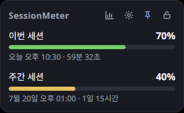
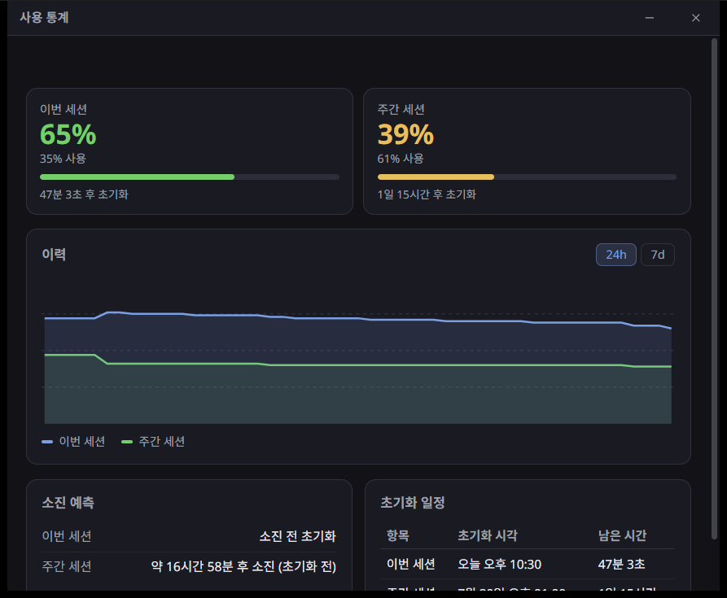

소개
SessionMeter는 Claude 구독 사용량(5시간 세션과 주간 한도)을 시스템 트레이 아이콘, 데스크톱 위젯, 통계 창으로 보여 주는 데스크톱 애플리케이션입니다. Tauri v2로 제작된 오픈소스(MIT) 프로그램입니다.
설치
릴리스 페이지에서 Windows 설치 프로그램(SessionMeter_x.y.z_x64-setup.exe)을
내려받아 실행합니다. Windows 10/11에서 동작하며 WebView2 런타임이 필요합니다(최신
Windows에는 기본 포함). 업데이트는 새 설치 프로그램을 실행하면 기존 설정과 로그인 세션이
유지된 채 덮어 설치됩니다.
Claude 로그인
처음 실행하면 설정 창과 로그인 창이 함께 열립니다. 이후에는 트레이 아이콘을 우클릭해 설정을 열고 계정 항목의 Claude 로그인을 누릅니다. 앱 안에서 claude.ai 로그인 창이 열리며, 로그인을 완료하면 세션이 자동으로 저장됩니다.
세션은 OS 애플리케이션 데이터 폴더의 사용자별 파일(session.dat)에 저장됩니다.
Windows에서는 이 파일이 DPAPI(사용자 범위)로 암호화되어 다른 사용자·오프라인 디스크·복사된
백업에서 복호화할 수 없습니다. 로그인되면 설정 계정 항목에 이름과 이메일이 표시되고
로그아웃 버튼으로 언제든 세션을 삭제할 수 있습니다.
트레이 아이콘 읽는 법
트레이 아이콘은 앱 아이콘으로 고정되며, 아이콘 위에 마우스를 올리면 계정명과 각 항목의 남은 사용량이 툴팁으로 표시됩니다. 툴팁의 남은 사용량은 색상 기준과 동일하게 다음과 같이 해석합니다.
| 상태 | 의미(남은 사용량 기준) |
|---|---|
| 여유(녹색) | 50% 이상 남음 |
| 주의(노랑) | 20% ~ 50% 남음 |
| 경고(빨강) | 20% 미만 남음 |
위젯과 통계 창의 사용량 막대는 같은 색상 기준으로 표시됩니다. 설정에서 표시 기준(남은 사용량 / 사용량)을 바꿀 수 있습니다.
트레이 조작
| 동작 | 결과 |
|---|---|
| 좌클릭 | 위젯 표시 / 숨김 |
| 더블클릭 | 통계 창 열기 |
| 우클릭 | 메뉴 열기(위젯, 통계, 설정, 종료) |
메뉴는 앱 테마에 맞춰 다크/라이트로 표시됩니다. 사용량은 설정한 갱신 주기마다 자동으로 갱신되므로 별도의 수동 새로고침 항목은 없습니다.
데스크톱 위젯
위젯은 테두리가 없고 작업 표시줄에 나타나지 않는 떠 있는 창으로, 5시간·주간(그리고 있는 경우 추가) 항목의 남은 사용량과 초기화까지 남은 시간을 보여 줍니다. 표시 내용에 맞춰 창 높이가 자동으로 맞춰집니다.
- 통계·설정 바로가기: 상단의 차트·톱니 아이콘으로 통계 창과 설정 창을 엽니다.
- 항상 위 고정: 핀 아이콘을 눌러 켜고 끕니다. 켜면 다른 창 위에 항상 표시됩니다.
- 위치 잠금: 자물쇠 아이콘을 눌러 켜고 끕니다. 잠그면 위젯을 드래그로 이동할 수 없습니다. 잠금 해제 상태에서는 위젯을 끌어 원하는 위치로 옮길 수 있으며, 옮긴 위치는 재부팅 후에도 복원됩니다.
- 투명도: 설정의 위젯 투명도 슬라이더로 조절합니다.

통계 창
트레이 아이콘을 더블클릭하면 통계 창이 열립니다. 다음을 제공합니다.
- 모든 사용 항목의 남은 사용량, 사용률, 초기화까지 남은 시간
- 최근 사용 추세 그래프(24시간 / 7일 전환)
- 현재 속도 기준 소진 예측
- 항목별 초기화 시각 일정

알림
사용량이 80% 및 95%에 도달하거나 세션이 초기화될 때 데스크톱 알림을 보냅니다. 설정에서 알림 사용 여부와 초기화 알림을 켜고 끌 수 있습니다.
tauri dev)
에서는 Windows 특성상 발신 주체가 다르게 보일 수 있습니다.
설정
- 테마: 시스템 / 라이트 / 다크. 트레이 아이콘, 위젯, 통계, 메뉴에 모두 적용되며, 시스템 선택 시 OS 라이트/다크 전환을 실시간으로 따릅니다.
- 언어: 자동(OS 언어) / 한국어 / English.
- 갱신 주기: 1 / 5 / 10 / 15 / 30분.
- 시작 시 실행: 로그인 시 자동 실행 등록.
- 트레이 표시, 위젯 투명도, 알림.
- 계정: 로그인 시 이름·이메일과 로그아웃 버튼, 미로그인 시 로그인 버튼.
문제 해결
- 사용량이 표시되지 않음: 설정에서 로그인 상태를 확인하고, 필요하면 다시 로그인합니다.
- 세션 만료: claude.ai 세션이 만료되면 다시 로그인해야 합니다.
- 로그인 창이 비어 있음: 잠시 기다려 페이지가 로드되게 하거나 창을 닫고 다시 로그인합니다. 로드가 지연되면 자동으로 정리됩니다.
- 트레이 아이콘이 보이지 않음: Windows 작업 표시줄의 숨겨진 아이콘 영역(^)을 확인합니다.
- 수치가 갱신되지 않음: 설정의 갱신 주기를 확인합니다. 갱신은 주기마다 자동으로 이루어집니다.
라이선스·면책·상표
애플리케이션 코드는 MIT 라이선스입니다. 번들된 폰트(Noto Sans, Noto Sans KR)는 SIL Open Font License 1.1을 따릅니다.
SessionMeter는 claude.ai의 비공식 엔드포인트를 사용하므로 언제든 동작이 바뀔 수 있습니다. 본인 계정의 세션으로만 동작하며, Anthropic의 이용약관을 확인한 뒤 본인 책임으로 사용하십시오. 본 프로그램은 Anthropic과 제휴·후원·보증 관계가 없으며, "Claude"와 "Anthropic"은 Anthropic, PBC의 상표로 호환 대상을 설명하기 위해서만 사용되었습니다.